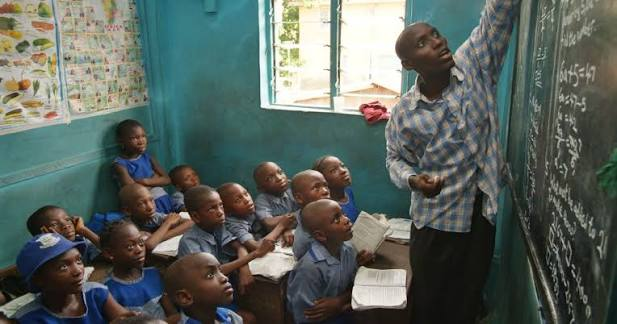

SDG 4 atau Pendidikan berkualitas bertujuan memastikan setiap orang mendapatkan pendidikan yang layak, adil, inklusif, dan berkualitas. Tujuan ini mencakup pemerataan akses pendidikan, peningkatan kualitas pembelajaran, serta kesempatan untuk mengembangkan pengetahuan dan keterampilan tanpa memandang latar belakang maupun kondisi ekonomi. Melalui pendidikan, setiap orang diharapkan dapat meraih masa depan yang lebih baik, menjadi lebih mandiri, dan berkontribusi bagi masyarakat.
Click each target to discover what SDG 4 aims to achieve.
Memastikan seluruh anak perempuan dan laki-laki menyelesaikan pendidikan dasar dan menengah secara gratis, adil, dan berkualitas agar memperoleh hasil pembelajaran yang efektif.
Memastikan seluruh anak mendapatkan akses terhadap perkembangan, pengasuhan, dan pendidikan anak usia dini yang berkualitas agar siap memasuki pendidikan dasar.
Menjamin kesetaraan akses bagi perempuan dan laki-laki terhadap pendidikan teknis, kejuruan, dan pendidikan tinggi yang terjangkau dan berkualitas, termasuk universitas.
Meningkatkan jumlah pemuda dan orang dewasa yang memiliki keterampilan sesuai kebutuhan, termasuk keterampilan teknis dan kejuruan, untuk memperoleh pekerjaan yang layak dan mengembangkan kewirausahaan.
Menghapus kesenjangan gender dalam pendidikan serta menjamin akses yang setara bagi kelompok rentan, termasuk penyandang disabilitas, masyarakat adat, dan anak-anak dalam kondisi rentan.
Memastikan seluruh pemuda dan sebagian besar orang dewasa, baik perempuan maupun laki-laki, memiliki kemampuan literasi dan numerasi yang memadai.
Memastikan seluruh peserta didik memperoleh pengetahuan dan keterampilan untuk mendukung pembangunan berkelanjutan, hak asasi manusia, kesetaraan gender, budaya damai, kewarganegaraan global, dan penghargaan terhadap keberagaman budaya.
Membangun dan meningkatkan fasilitas pendidikan yang ramah anak, penyandang disabilitas, dan gender, serta menyediakan lingkungan belajar yang aman, inklusif, bebas kekerasan, dan efektif bagi semua.